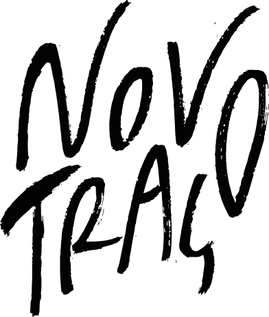
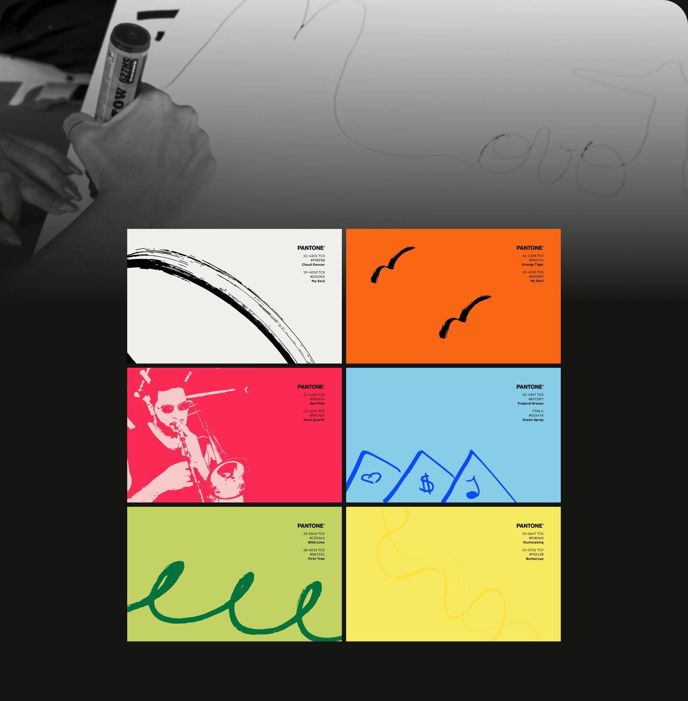
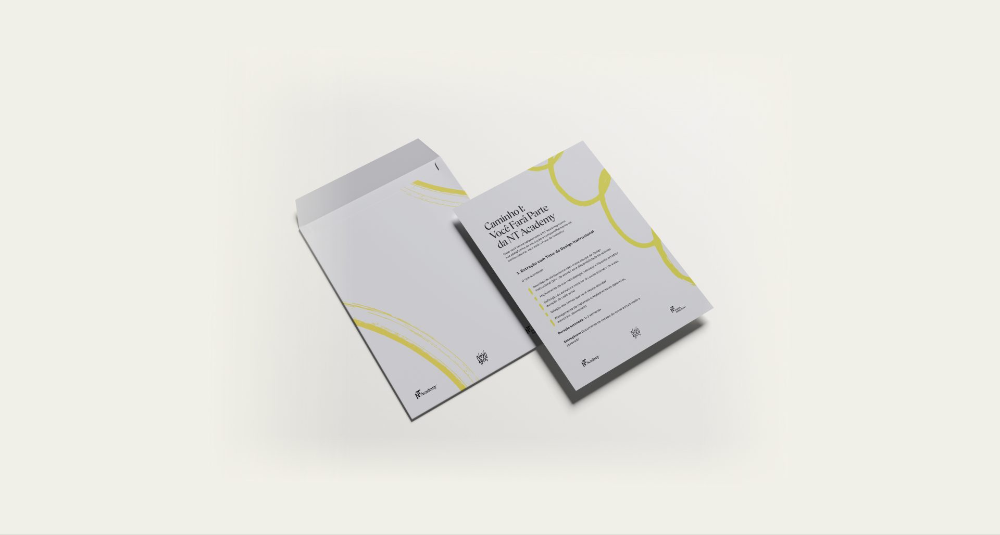
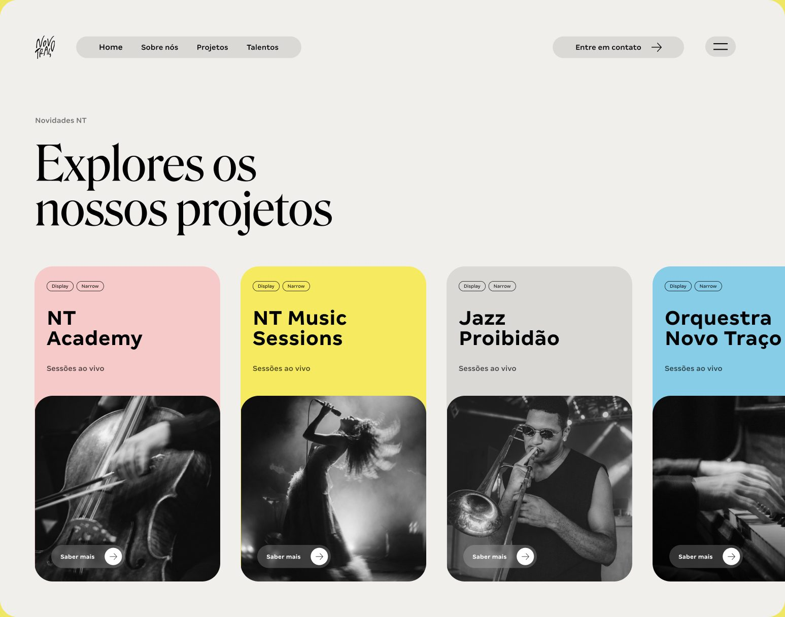

Novo Traço
Uma marca-mãe para um grupo de arte e música: a expressividade brasileira traduzida em traço, cor e contraste.
- Cliente
- Novo Traço
- Ano
- 2025 — 2026
- Papel
- Direção de arte
- Escopo
- Arquitetura de marca, identidade visual, submarcas, guidelines e digital

Contexto e desafio
A Novo Traço é um grupo de arte e cultura que reúne educação, música ao vivo e produção musical: NT Academy, NT Music Sessions, Jazz Proibidão, Orquestra Novo Traço e a gravadora NT Records. Seu propósito é despertar e nutrir o espírito humano e impulsionar a prosperidade social através da potência da arte.
O desafio era construir um sistema que reunisse projetos muito diferentes sob uma mesma voz, sem apagar a personalidade de cada um: do erudito da orquestra à urbanidade da gravadora.
Conceito
Contrastes e expressividade. A identidade nasce da expressividade como linguagem vital do povo brasileiro, onde a arte é ferramenta de sobrevivência, comunicação e identidade. Seus contrastes, entre erudito e popular, tradição e ruptura, dor e celebração, refletem a miscigenação cultural que gera impacto emocional e conexão real.

Cores e traços
As cores vivas funcionam como linguagem direta, refletindo a intensidade que atravessa a música, a arte e as ruas do Brasil. Os traços são feitos à mão, com tinta, e trazem para a identidade uma expressividade genuína, impossível de simular digitalmente.
Cada submarca e cada projeto recebe um par de cores e um traço próprio, o que dá variedade ao sistema sem quebrar a unidade.

Tipografia
Uma paleta tipográfica dá a cada segmento de comunicação sua própria voz. A Univers, com pesos do Ultra Light ao Black, permite misturar pesos dentro da mesma palavra. A Roslindale Narrow traz o refinamento editorial dos títulos, e a Margem, do estúdio brasileiro Haag Type, assume o texto corrido e os pequenos detalhes.




Resultado
O sistema hoje sustenta toda a comunicação do grupo, dos eventos ao digital, e cada novo projeto nasce dentro dele. Como diretora de arte, coordeno um time de três designers e desenvolvo os manuais e guidelines que mantêm a marca consistente entre equipes e parceiros.